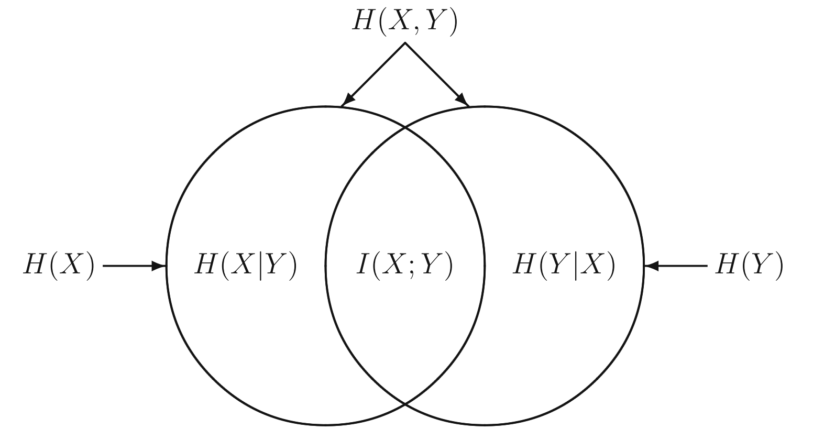
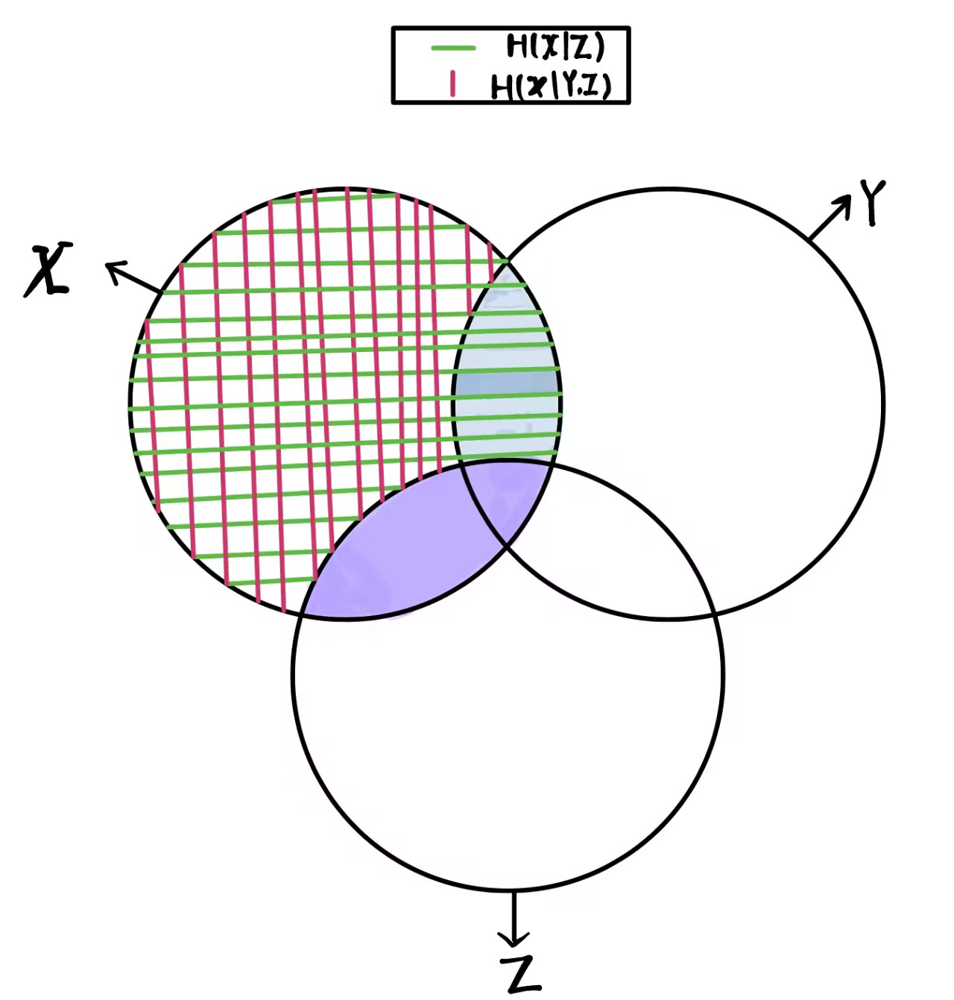

信息论 (一)
Self-information and entropy notes
On This Page
- ※ Self-Information $I(n)$
- 1 数学描述
- Cond1
- Cond2
- Cond3
- Cond4
- 2 数学证明
- 2.1 提出命题
- 2.2 证明过程
- 补充
- ※ Entrophy
- 1 熵的定义
- 2 熵的属性
- 2.1 Fundamental Inequality(FI)
- 2.2 Nonenegativity
- 2.3 Upper bound on entropy
- 2.4 Log-sum inequlity
- 3 联合熵和条件熵
- 3.1 二维元素事件的自信息
- 3.2 联合熵的定义
- 3.3 条件熵的定义
- 3.4 定理和推论
- 4 联合熵和条件熵的属性
- 4.1 条件不增性 Conditioning never increases entrophy
- 4.2 独立可加性 Additivive for independent random variables
- 4.3 条件不等式 Conditional entrophy is lower additive
- ※ Mutual Information
- 1 互信息的定义
- 2 互信息的属性
- 2.1 互信息的等价表达式
- 2.2 互信息不大于单随机变量的熵
- 2.3 互信息非负性
- 2.4 互信息的上界
- 3 条件互信息
- 3.1 定义
- 3.2 联合互信息和互信息的链式法则
- 参考链接🔗
※ Self-Information $I(n)$
我们要定义一个函数(或者说一个事件新的属性，称为自信息)，该函数能够衡量当一件事情在发生之前事件的不确定性，如此我们首先达成以下共识：
- 事件需要依据它的固有属性数字化，这里我们使用事件发生的概率
- 当一个事件发生的概率越大，所含信息量越少，概率为1时候，信息量为0。
- 独立事件同时发生时候，信息量是各个独立事件信息量之和
- 事件发生概率的微小变动会影响自信息
注意，这里的信息量是一种信息容量，就像kg一样刻画物体的质量，但是不同的是，信息容量表示的内在含义是指数级的，如3bit相对于1bit，数字上是3倍，但是3bit可以刻画的状态数却是四倍于1bit。我们可以粗浅理解这里的信息量类似于比特数，它是一种新的量纲!
1 数学描述
Cond1
设事件 $E$ 属于一个给定的事件集合(空间)，其发生概率为:
因此我们要找一个实函数，其性质如下:
Cond2
该函数是一个单调递减函数：
并且有一个固定点：
Cond3
独立事件同时发生的概率等于各个事件发生概率之积，因此函数具有以下性质：
Cond4
$I(x)$是一个连续的函数
2 数学证明
2.1 提出命题
满足上述四个条件的函数只能是：
其中c是一个正实数，b是一个任何大于1的整数。
2.2 证明过程
2.2.1 引理-1
先证明如下引理：对于$n=1,2,3,..$
证明：
当n=1时，根据Cond2，$左=I(1)=0$，$右=-c \cdot log_b(1)=0=左$，等式成立。
当n>1时，依据公式1-1以及公式1-2，知道当n<m时，
同时，依据公式1-2，不难推导出对于任意非负整数k，有：
对于任意正整数r，一定有非负整数k：
根据公式1-1和公式2-3以及$r>0$且$n>1,I(\frac{1}{n})>0$：
易知：
综合公式2-4和公式2-5有：
因为b也是常量，当n固定时候，$r \to \infty$，可以知道：
引理-1得证。
2.2.2 引理-2
再证明如下引理：对于正有理数$0<p<1$，有：
其中$c>0$是一个常数。
证明：因为p是一个正有理数，所以一定存在正整数r,s使得$p=r/s$。
由公式1-2知：
根据中间引理-1知：
所以中间引理-2得证。
2.2.3 引理-3
最后证明如下引理：
易知：
所以连续得证。
综合上述3个引理，原命题得证。
补充
我们通常将c设置为1，对于不同底数b，单位是不同的，b=2时，单位为bit，b=e也就是自然底数时，单位为nat
※ Entrophy
自信息讨论的是一整个事件空间中某一个事件的属性，这个属性只依赖于事件发生的概率。
可以这样理解：所谓自信息，香农提出的是概率性度量，香农认为，记录一个概率发生小的事件比概率发生大的事件需要更多的空间，因为一个人确定低概率事件发生所需要的不确定性代价更高。这符合直觉吗？联想一下哈夫曼编码，当我们给大概率事件赋予更少比特数时候，压缩率达到最高。
1 熵的定义
对于一个概率质量函数为$P_X(\cdot )$离散随机变量$X$，它的熵定义为：$H(X)$或者$H(P_x)$：
其中$\mathcal{X}$是随机变量$X$取值的有限大小的字母集合，熵的含义是：当了解到字母集合中一个字母出现时候，一个人能够获得信息量的的统计均值。
在计算熵的时候我们规定：
因为随着$x\rightarrow0^+$，$xlog_2x\rightarrow0$
特别的，对于一个服从$0-1$分布的随机变量$X$，如果$P_X(1)=p$，并且$P_X(0)=1-p，p\in [0,1]$是一个定值，那么：
2 熵的属性
2.1 Fundamental Inequality(FI)
对于任意$x>0，D>1$，下面的不等式：
成立，且等号当且仅当$x=1$时成立
令$y=\frac{1}{x}$代入上式，亦得：
对于任意$y>0$成立，并且等号当且仅当$y=1$时成立。
2.2 Nonenegativity
$H(X) \ge 0$ 恒成立，且等号当且仅当X是确定性的时候成立。
2.3 Upper bound on entropy
如果随机变量$X$从一个有限字母集合$\mathcal{X}$中取值，那么无论随机变量$X$的概率分布如何，它的熵有一个上界：
其中$|\mathcal{X}|$表示字母集合$\mathcal{X}$的大小，等号当且仅当$X$服从均匀分布成立。这个上界还叫Hartley's function or entrophy
2.4 Log-sum inequlity
对于所有非负数，$a_1, a_2, ..., a_n$和$b_1, b_2, ..., b_n$，有不等式：
等式当且仅当对于所有的$i=1, ..., n$，
证明可以使用著名的琴生不等式加权版(Jensen's inequality)。
凸集
一个集合是凸集(convex set)，如果对任意$x_1,x_2\in C$和$\theta \in [0, 1]$ 都有：
仿射集自然是凸集的一种，类比于仿射集的相关概念，我们可以得到凸包（convex hull ）的定义：
严格凸函数
$f:R^n \rightarrow R$如果定义域是凸集，有$\forall x,y, and \; when \; \theta \in [0,1]$有：
成立，且当$\theta \in (0,1)$且$x \ne y$时候，上述不等式不等号严格成立，则$f$称为严格凸函数。
📌琴生不等式
对于任何严格凸函数(strictly convex function)$f(\cdot )$，如果$\alpha_i\ge0$并且$\sum_{i=1}^{n}{\alpha_i}=1$，则：
成立，且等号当且仅当$t_1=t_2=...t_n=Const.num$
3 联合熵和条件熵
回顾条件概率，这里千万记住：$P(X,Y|Z)$的含义是$P((X,Y)|Z)$也就是，在$Z$发生的条件下，$X,Y$一起发生的概率。同理，$P(Y|X,Z)$的含义是$P(Y|(X,Z))$也就是，在$X,Z$均发生的条件下 $Y$发生的概率。总之，'$\; | \;$'左右是一个整体，'$，$'的运算优先级高于 '$\; | \;$'
3.1 二维元素事件的自信息
一对随机变量$(X,Y)$，其联合概率质量函数为$P_{X,Y}(\cdot ,\cdot )$，则对于元事件$\left\{ X=x,Y=y \right\}$，其自信息为：
3.2 联合熵的定义
随机变量$(X,Y)$的熵定义为：
3.3 条件熵的定义
给定两个联合分布的随机变量$X,Y$，考虑$X$对于$Y$的条件熵$H(Y|X)$定义为：
3.4 定理和推论
熵的链式法则
由联合熵的定义知：$H(X,Y)=H(Y,X)$，具有可交换性。所以：
进一步有：
上面等式中两边的含义就是后面会介绍的互信息(mutual information)！
条件熵的链式法则
通俗理解，就是熵的链式法则的推广，只不过熵的链式法则是在全局事件空间$\Omega$下，
而条件熵则是在局部事件空间$Z$中。
4 联合熵和条件熵的属性
4.1 条件不增性 Conditioning never increases entrophy
引入条件后，事件空间不确定性不可能增加，可以认为产生了信息增益：
当且仅当$X,Y$独立时候取等。
4.2 独立可加性 Additivive for independent random variables
对于相互独立的随机变量$X,Y$，其联合熵可以表示为：
4.3 条件不等式 Conditional entrophy is lower additive
※ Mutual Information
1 互信息的定义
通俗理解：对于两个随机变量$X$和$Y$，当观察到某一个随机变量时候，另一个随机变量不确定性减少的量。很显然，由定义容易推断其有对称性。事实上，它就隐藏在上一章熵的链式法则中：
2 互信息的属性
2.1 互信息的等价表达式
上述三个等式都可以根据熵的定义容易推出。
2.2 互信息不大于单随机变量的熵
等号当且仅当对于一些$X=f(Y)$情况成立。
2.3 互信息非负性
等号当且仅当$X和Y$相互独立。
2.4 互信息的上界
这可以根据互信息的定义式以及熵的上界不等式推出。
熵，条件熵，联合熵，之间的Venn图关系如下：

3 条件互信息
注意：在$I(\cdot )$中，关系运算符的优先级从高到低是 $, \;\;\;\; ; \;\;\;\; |$
3.1 定义
在获取了知识$Z$情况下，随机变量$X和Y$之间的共享不确定性。
3.2 联合互信息和互信息的链式法则
定义随机变量$X$和联合随机变量$(Y,Z)$联合互信息：
我们有链式法则如下：
使用Venn图理解就是：

其中上图图紫色实心区域为：$I(X;\; Z)$，蓝色实心区域为：$I(X;\; Y|Z)=H(X|Z)-H(X|Y,Z)$。而链式法则第二个等号右侧的含义就是 紫色实心区域 + 蓝色实心区域 得到随机变量$X$与联合分布$(Y,Z)$之间的互信息：$I(X;\; Y,Z)$
参考链接🔗
1. No.2 信息熵的广义可加性：条件熵、互信息的几何含义 - 知乎 (zhihu.com)
2. No.3 梳理汇总：信息熵、条件熵和互信息的性质及其推导 - 知乎 (zhihu.com)